Низкооборотный трехфазный
шаговый двигатель с дисковым ротором на постоянных магнитах
(16-полюсный ротор, 12 катушек на статоре, угол шага 7.5 градусов)
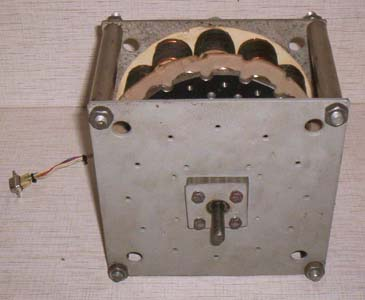
1. Введение
Трехфазный шаговый двигатель (ШД) с дисковым ротором на постоянных магнитах разрабатывался как обратимая машина - двигатель и электрогенератор [5] для совершенствования опыта расчета и проектирования трехфазных электромашин.
2. Характеристики:
3. Конструкция трехфазного ШД
Эскиз конструкции трехфазного ШД показан на рис. 3.1 - 3.3, а внешний вид - на рис. 3.4.
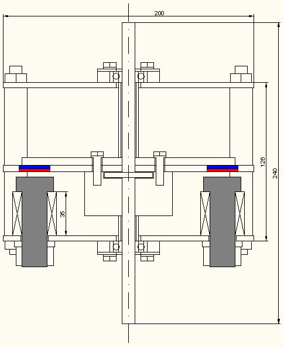
Рис. 3.1. Сборочный чертеж трехфазного ШД (поперечный разрез).
Статор трехфазного ШД состоит из двух квадратных стальных пластин, разделенных распорками и стянутых шпильками. На нижней пластине расположены по окружности катушки в виде цилиндрических соленоидов со стальными сердечниками (12 штук, рис. 3.2). В качестве сердечников катушек использованы болты М20. Применение сердечников из сплошной малоуглеродистой стали в данном случае оправдано невысокой частотой вращения ротора и, соответственно, низкой частотой питающего напряжения (менее 13.3 Гц). Кроме того, подобное решение отличается простотой и дешевизной. В центре пластин статора закреплены подшипники, через которые пропущена ось ротора. Ротор представляет из себя укрепленный на оси стальной диск, к которому с использованием центрующей немагнитной накладки крепятся постоянные магниты (16 штук, рис. 3.3) с чередующимся направлением намагниченности. Магниты представляют из себя аксиально намагниченные диски состава неодим-железо-бор типоразмера Д25х5. Намагничивание магнитов производилось в установке импульсного намагничивания [10], а контроль и подбор по магнитным свойствам с помощью тесламетра [6]. Расчет катушек трехфазного ШД выполнен с помощью программы Coil [2]. Катушки каждой фазы ШД (по 4 катушки на фазу) соединены между собой последовательно, а фазы - звездой. При подключении к трехфазному инвертору (рис. 4.1) работа ШД осуществляется в трехфазном режиме с плавным поворотом ротора в пределах одного шага. При использовании других систем управления (СУ) ШД может работать в шаговом или полушаговом режиме.
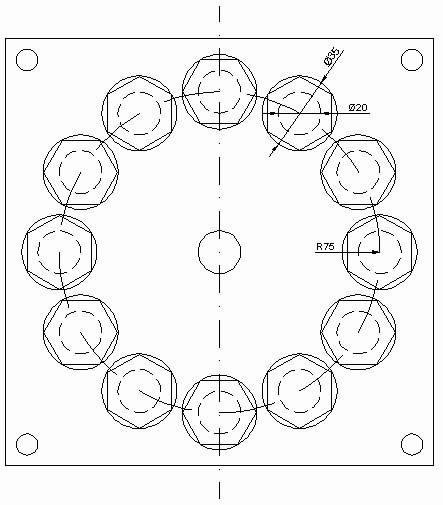
Рис. 3.2. Схема расположения катушек на статоре трехфазного ШД.
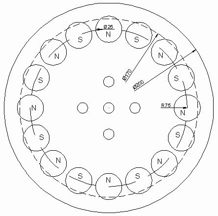
Рис. 3.3. Схема расположения магнитов на роторе трехфазного ШД. Магниты с чередующейся полярностью устанавливаются с использованием немагнитной центрующей накладки на стальном диске.
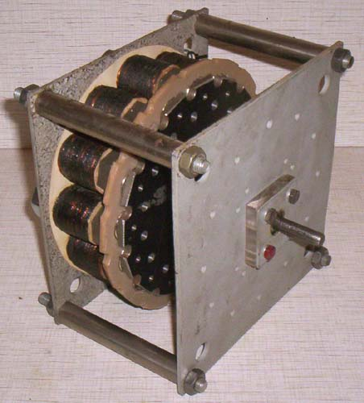
Рис. 3.4. Внешний вид трехфазного ШД.
4. Система управления трехфазным ШД
Для опробования ШД и измерения его характеристик была использована система управления (СУ) с использованием трехфазного инвертора Simphoenix E550-2S022B. Электрическая принципиальная схема включения обмоток трехфазного ШД и подключения его к сети переменного тока 220 В 50 Гц через трехфазный инвертор представлена на рис. 4.1. Инвертор позволяет программным способом задавать частоту питающего напряжения и, соответственно, частоту вращения ротора ШД, время разгона и торможения, амплитуду питающего напряжения, определяющую величину вращательного момента, а также направление вращения ротора ШД и другие параметры.
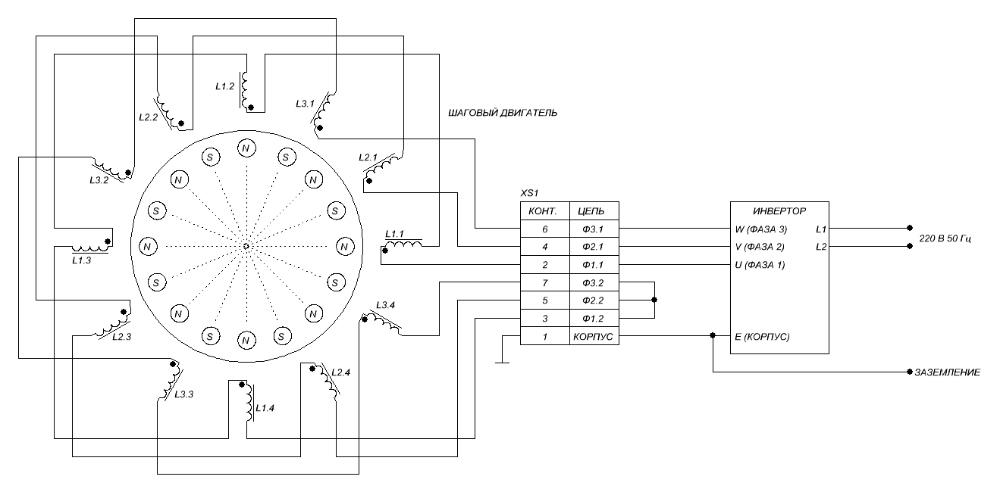
Рис. 4.1. Внутренняя коммутация обмоток трехфазного ШД. Схема включения обмоток ШД звездой и подключения к сети переменного тока 220 В 50 Гц через трехфазный инвертор.
Также при необходимости могут использоваться модификации СУ шаговыми двигателями на PIC-контроллере [11] с увеличенной выходной мощностью.
5. Расчеты трехфазного ШД
Катушки статора трехфазного ШД представляют собой цилиндрические соленоиды. Их расчет (число витков и активное сопротивление) был выполнен с помощью программы Coil [2]. Результаты расчета числа витков и активного сопротивления приведены на рис. 5.1 и в таблице 5.1.
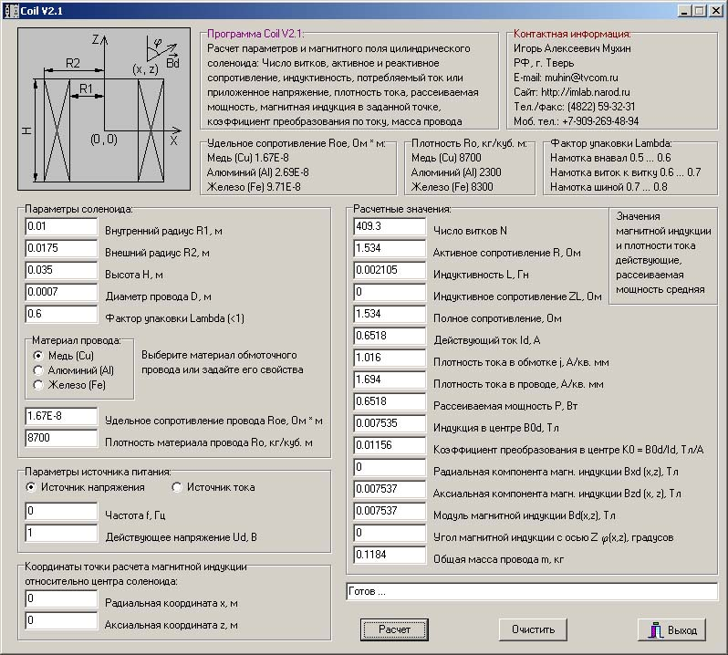
Рис. 5.1. Расчет одиночной катушки статора трехфазного ШД. Каждая фаза состоит из четырех последовательно включенных катушек.
Расчет магнитной системы трехфазного ШД произведен методом конечных элементов [7] с помощью программы Ansoft Maxwell [1]. На рис. 5.2 показана расчетная трехмерная модель магнитной системы ШД. Целью расчета было нахождение момента на валу ШД при номинальном токе 1 А через каждую фазу (в соответствии с их коммутацией) и индуктивности фаз.
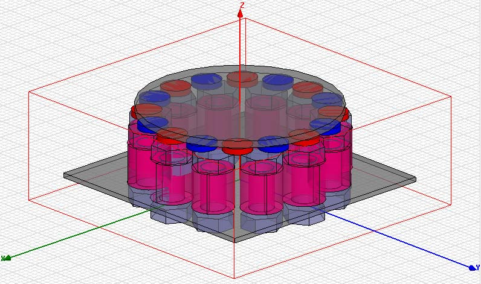
Рис. 5.2. Трехмерная расчетная модель магнитной системы трехфазного ШД в программе Ansoft Maxwell [1]. Шаг сетки 5 мм. Стальные детали показаны серым цветом, постоянные магниты - красным и синим, обмотки - малиновым.
Стальные детали трехфазного ШД изготовлены из малоуглеродистой стали, магнитные свойства которой представлены на рис. 5.3.
Рис. 5.3. Кривая намагничивания малоуглеродистой стали, использованной при изготовлении трехфазного ШД.
Для изготовления ротора трехфазного ШД использованы цилиндрические постоянные магниты состава Nd-Fe-B типоразмера Д25 х 5 (на рис. 5.2 изображены красным и синим цветом в зависимости от ориентации намагниченности) со следующими магнитными свойствами: остаточная индукция 1.1 Тл, коэрцитивная сила по намагниченности 850 кА/м. Постоянные магниты намагничены аксиально в установке импульсного намагничивания [10]. Ток в катушках фазы ШД предполагается равным нулю, если постоянные магниты ротора находятся напротив полюсных наконечников катушек фазы, и 1 А, если постоянные магниты сдвинуты относительно полюсных наконечников, при этом полярность тока фазы определяется полярностью магнитов ротора таким образом, чтобы направление создаваемого момента было одним и тем же для всех фаз. Число витков одиночной катушки предполагалось равным 400, то есть для расчета индуктивности фазы магнитодвижущая сила каждой из последовательно включенных катушек при питании током 1 А составляла 400 А ∙ витков. Результаты расчета момента и индуктивности приведены в таблице 5.1.
Таблица 5.1. Соответствие рассчитанных и измеренных параметров трехфазного ШД.
| Параметр | Рассчитанное значение | Измеренное значение |
|
Число витков одной катушки |
≈409 | 400 |
| Активное сопротивление одиночной катушки, Ом | 1.534 | 1.765 ... 1.788 |
|
Активное сопротивление одной фазы, Ом |
6.136 | 7.06 ... 7.15 |
| Индуктивность одной фазы, мГн | 242 | 185 ... 225 |
| Момент на валу, Н ∙ м | 4.922 | 4 |
Соответствие измеренных и рассчитанных значений приемлемое с учетом погрешностей в выставлении зазоров между магнитами ротора и полюсными наконечниками катушек статора, а также неточности в задании питающего тока. Удельное сопротивление обмоточного провода, как правило, несколько больше справочного значения для меди (1.67 ∙ 10-8 Ом ∙ м [8]) из-за наличия примесей.
6. Испытания трехфазного ШД
Активное сопротивление фаз ШД измерено мультиметром APPA-107N и составило: 7.15 + 0.05 Ом, 7.08 + 0.05 Ом, 7.06 + 0.05 Ом.
Индуктивность фаз ШД была измерена на переменном токе методом амперметра-вольтметра (рис. 6.1) на частотах 2, 5 и 10 Гц. Последовательно соединенные катушки фазы L подключались к выходу усилителя мощности низкой частоты [9] через балластный резистор R1.1R1.2 сопротивлением 10 Ом (точная подстройка осуществлялась с помощью переменного резистора R1.2). На вход усилителя мощности подавался сигнал с выхода генератора Г3-118. С помощью первого канала осциллографа UTD2102CEL-R измерялась амплитуда напряжения на балластном резисторе R1.1R1.2. По ней рассчитывалась амплитуда тока I0 через обмотки фазы L. Амплитудное значение напряжения на выводах фазы U0 измерялось с помощью второго канала осциллографа. Полное сопротивление фазы ZL рассчитывалось как отношение амплитудных значений напряжения на фазе и тока через нее, а далее по известному активному сопротивлению R находилась ее индуктивность L с использованием формул:


Рис. 6.1. Схема для измерения индуктивности на переменном токе методом амперметра-вольтметра.
В таблице 6.1 приведены значения измеренной на частотах 2, 5, 10 Гц индуктивности разных фаз ШД.
Таблица 6.1. Индуктивность разных фаз ШД, измеренная на разных частотах.
|
|
Частота f, Гц |
|||
|
2 |
5 |
10 |
||
|
Фаза A |
I0, А |
0.1 |
0.1 |
0.1 |
|
U0 , В |
0.75 |
0.9 |
1.3 |
|
|
ZL, Ом |
7.5 |
9.0 |
13.0 |
|
|
R, Ом |
7.15 |
7.15 |
7.15 |
|
|
L, мГн |
180 |
174 |
173 |
|
|
Фаза B |
I0, А |
0.1 |
0.1 |
0.1 |
|
U0 , В |
0.75 |
0.9 |
1.3 |
|
|
ZL, Ом |
7.5 |
9.0 |
13.0 |
|
|
R, Ом |
7.08 |
7.08 |
7.08 |
|
|
L, мГн |
197 |
177 |
174 |
|
|
Фаза C |
I0, А |
0.1 |
0.1 |
0.1 |
|
U0 , В |
0.75 |
0.9 |
1.3 |
|
|
ZL, Ом |
7.5 |
9.0 |
13.0 |
|
|
R, Ом |
7.06 |
7.06 |
7.06 |
|
|
L, мГн |
201 |
178 |
174 |
|
На рис. 6.2 показан график зависимости индуктивности от частоты измерений. С увеличением частоты измерительного напряжения индуктивность уменьшается и наоборот. Сплошными линиями показаны полиномиальные аппроксимации (степени 2) измеренной индуктивности, которые на нулевой частоте дают оценку индуктивности в диапазоне 185 ... 225 мГн для разных фаз (в среднем примерно 200 мГн, что достаточно хорошо согласуется с расчетами, см. таблицу 5.1).

Рис. 6.2. Зависимость индуктивности, измеренной методом амперметра-вольтметра, от частоты измерительного напряжения.
Измерение частоты вращения ротора трехфазного ШД осуществлялось с помощью датчика частоты вращения на магнитоуправляемой микросхеме и постоянном магните [3]. На вал ШД крепился цилиндрический постоянный магнит с отверстием, намагниченный по диаметру в установке импульсного намагничивания [10]. Датчик устанавливался в непосредственной близости к магниту. Схема подключения ШД и датчика частоты вращения показана на рис. 6.3. Для питания датчика использовался источник питания с выходным напряжением +5 В. Частота вращения рассчитывалась по измеренному с помощью осциллографа периоду выходного сигнала датчика.
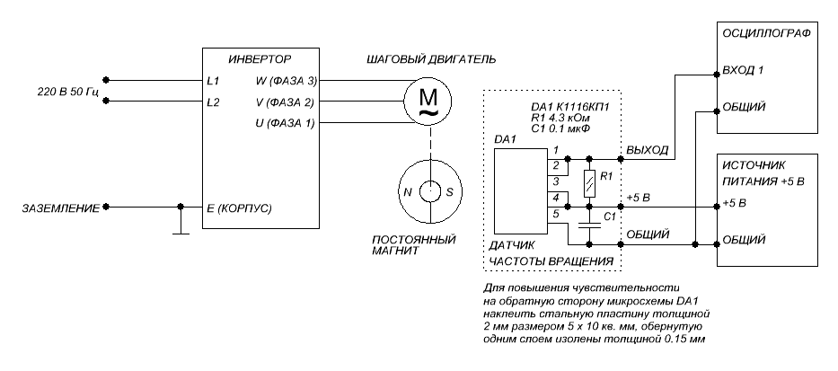
Рис. 6.3. Схема подключения трехфазного ШД и датчика частоты вращения [3].
Для измерения момента на валу трехфазного ШД использовались две схемы, показанные на рис. 6.4, 6.5. На вал ШД крепился рычаг заданной длины (около 200 мм). Далее измерялось усилие, которое ШД способен развить с помощью рычага в заданной его точке (вблизи конца рычага). В испытаниях, проводимых по первой схеме (рис. 6.4), при вращении вала ШД рычаг в своем горизонтальном положении упирался через прокладку в платформу весов, используемых в качестве динамометра. Показания весов (килограммы) пересчитывались в единицы силы (Ньютоны), а затем умножались на длину рычага. При испытаниях по второй схеме (рис. 6.5) измерялся максимальный вес груза, который ШД был способен поднять рычагом из начального вертикального положения в конечное горизонтальное. Вес груза (в Ньютонах) умножался на длину рычага. Максимальное измеренное значение момента на валу ШД достигало 4 Н ∙ м.
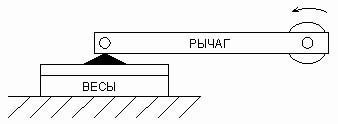
Рис. 6.4. Схема измерения момента с использованием весов. Рычаг, прикрепленный к оси трехфазного ШД, вращается в направлении, показанном стрелкой, и давит на платформу весов.
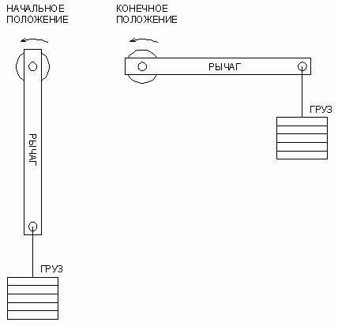
Рис. 6.5. Схема измерения момента с использованием груза. Рычаг, прикрепленный к оси трехфазного ШД, вращается в направлении, показанном стрелкой, и поднимает подвешенный к нему груз.
7. Заключение
Трехфазный ШД, описание которого представлено выше, несложен в изготовлении, имеет достаточно большой момент вращения на валу и может использоваться в приложениях с малыми скоростями вращения и умеренными углами шага. Дополнительным свойством двигателя является фиксация ротора в отключенном состоянии за счет притяжения магнитов к полюсным наконечникам катушек. Свойство обратимости позволяет использовать данную электромашину в качестве трехфазного электрогенератора [5]. Расчетные и измеренные параметры ШД достаточно хорошо согласуются между собой.
Ссылки:
20.12.2018
Альтернативные источники
энергии
Компьютеры и
Интернет
Магнитные поля
Механотронные системы
Перспективные
разработки
Электроника и
технология